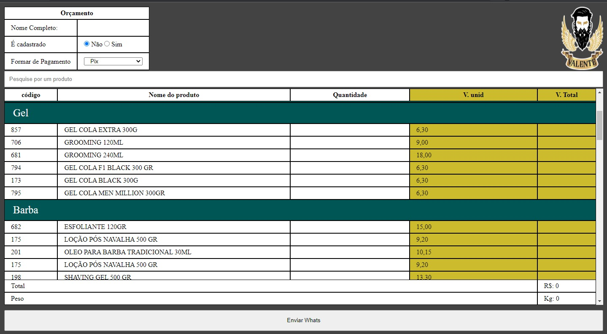
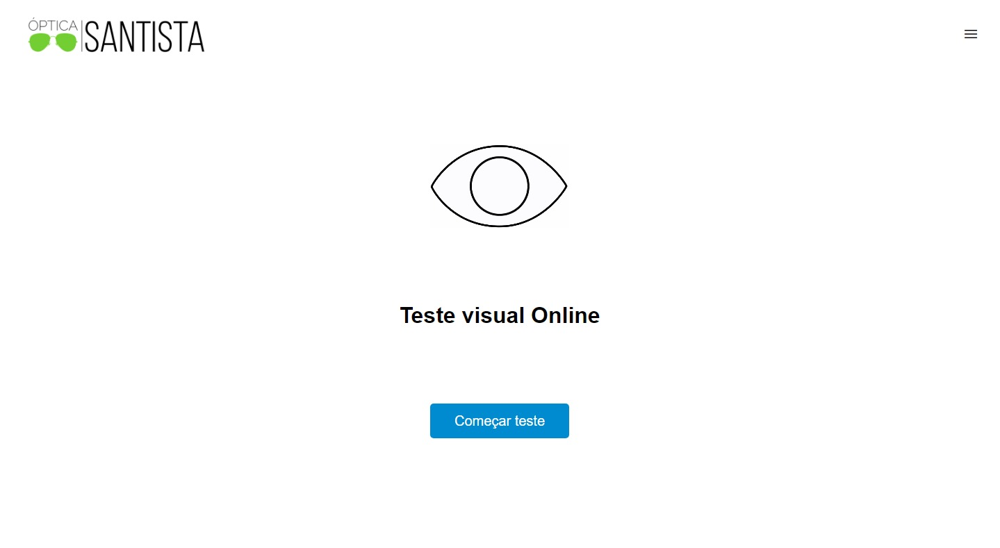
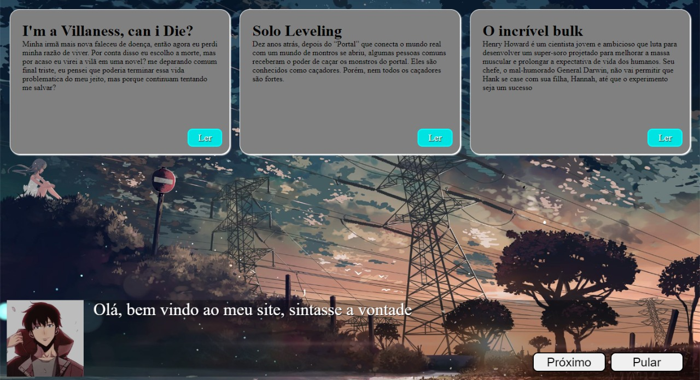

Tabela Inteligente
Uma tabela que varia seu preço e soma automaticamente, e após colocar todos os produtos que deseja, tem um botão para enviar mensagem personalizada no WhatsApp

Teste visual
Um site feito para uma venda de óculos, onde se passa por uns testes e ao chegar no final, você cadastra seu e-mail para receber o resultado

PokeNext
Uma Pokedex feita com NextJS para treinar Typescript. Nela lista todos os pokemons de todas as gerações e mostra quais são seus tipos

Mymind-review
Um site criado para o administrador criar posts de conteudo que leu/assistiu, assim podendo compartilhar suas opniões e seus gostos. O site se encontra em pausa, pois motivos pessoal do cliente.